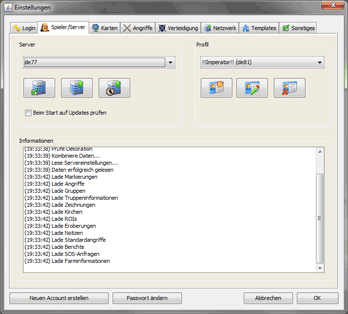
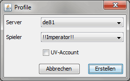

Spieler-/Servereinstellungen |
|
|  | |
| Die Spieler-/Servereinstellungen befassen sich mit dem eigentlichen DS Account und den Weltdaten. Beim ersten Programmstart sind auf deinem Rechner noch keine Weltdaten vorhanden, was mit einer entsprechenden Fehlermeldung beim Start bekanntgegeben wird. Für den Download von Weltdaten sind korrekte Netzwerkeinstellungen zwingend erforderlich. Um die Daten für einen Server herunterzuladen, wählt man den Server in der Liste der verfügbaren Server an und bestätigt seine Wahl durch einen Klick auf linken Button darunter. Nun werden, bei korrekten Login- und Netzwerkeinstellungen die Weltdaten für den gewählen Server heruntergeladen und eingelesen. Habt ihr die aktuellen Weltdaten heruntergeladen müsst ihr beim ersten Start noch ein Spielerprofil erstellen, was ihr auf der rechten Seite tun könnt. Über den linken Button erstellt ihr über den folgenden Dialog ein neues Profil: |
|
|  | |
| Hier ist der gewählte Server aktiviert und ihr seht eine Liste der Spieler die auf dem Server unterwegs sind. Sucht in der Auswahlliste euren InGame-Namen oder den Namen eines anderen Spielers aus dessen Sicht ihr einmal den Server erleben wollt, zum Beispiel falls ihr DS Workbench mit einer UV nutzen wollt. Für diesen Fall müsst ihr vorher noch die Checkbox 'UV-Account' anwählen. Über einen Klick auf Erstellen wird ein neues Profil erstellt und kann verwendet werden. Ihr könnt für einen Server beliebig viele Profile erstellen. Die Daten wie z.B. Markierungen, Angriffe und einige Einstellungen werden für jedes Profil getrennt gespeichert, können aber zwischen den Profilen Ex- bzw. Importiert werden. Mit den anderen beiden Buttons unter der Profilauswahl habt ihr noch die Möglichkeit, Profile zu verändern oder Profile zu löschen. Dabei ist zu beachten, dass mit der Löschung von Profilen alle profilbezogenen Daten verlorengehen! |
|
| Die Auswahl des In-Game Spielers ist in keiner Weise mit deinem tatsächlichen In-Game Account verbunden. Natürlich sind In-Game Funktionen nur mit dem korrekten Account möglich, da man dafür im Spiel eingeloggt sein muss, aber es spricht absolut nichts dagegen, mit DS Workbench die Karte auch mal aus der Perspektive eines beliebigen anderen Spielers zu sehen. | |
| Um an aktuelle Weltdaten zu gelangen gibt es zwei Möglichkeiten. Zum einen kann man aktuelle Daten über einen Klick auf den mittleren Button unter der Serverauswahl auf den neusten Stand bringen, zum anderen kann man das Feld Beim Start auf Updates prüfen auswählen, wodurch bei jedem Start von DS Workbench geprüft wird, ob aktuellere Weltdaten vorhanden sind und falls das der Fall ist werden diese sofort heruntergeladen und eingelesen. Natürlich verlangsamt die zweite Möglichkeit den Start des Programms, aber sie verhindert auch dass man auf alten Daten arbeitet, was in den meisten Fällen wohl wesentlich unangenehmer ist. | |
| Die Weltdaten werden nicht direkt von den DS Servern geladen, sondern vom DS Workbench Server. Die beim Benutzer vorhandene Version der Weltdaten wird für jeden Server und jeden DS Workbench Account gespeichert und vor jedem Update überprüft. Da die Daten zentral aktualisiert werden bringt es nichts, sich mehrere DS Workbench Accounts anzulegen um an aktuellere Daten zu kommen, da jeder Benutzer der seine Daten aktuell hält dieselbe Version der Daten hat. Sollte es einmal Probleme beim Download vom DS Workbench Server geben, besteht die Möglichkeit, die Daten direkt von den DS Servern herunterzuladen. Diese Möglichkeit sollte allerdings sparsam und nur im Notfall eingesetzt werden! Sollte ein Update trotz korrekter Login- und Netzwerkeinstellungen nicht möglich sein, wende dich bitte an support@dsworkbench.de |
|
| Das Update der Weltdaten auf den DS Workbench Server wird jeden Tag um Mitternacht durchgeführt, demnach entsprechen die Datenversionen auch diesem Zeitpunkt. Sollte man einmal doch aktuellere Weltdaten benötigen, so befindet sich unter der Serverauswahl noch ein weiterer Button mit dem Die Stämme Logo. Klickt ihr auf diesen Button, so werden die aktuellen Weltdaten direkt vom DS Server heruntergeladen. |
|